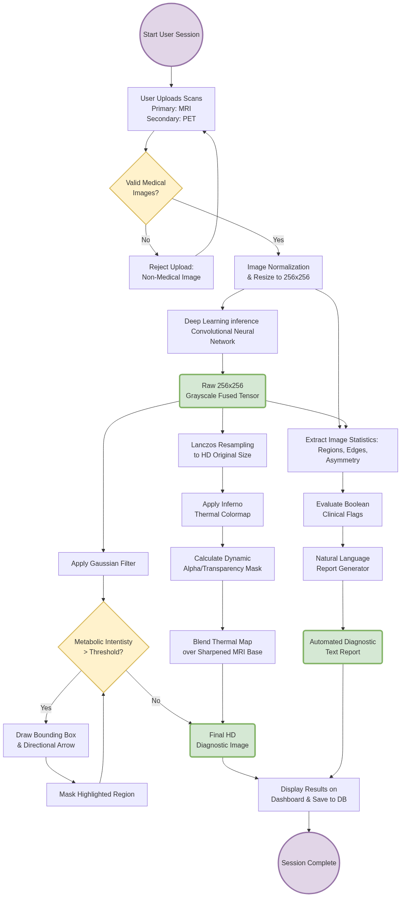

MedFuse instantly merges structural MRI and functional PET scans using advanced neural networks. Detect anomalies faster, reduce diagnostic errors, and generate clinical-grade reports in seconds.
Designed for researchers, tailored for clinicians.
Combines high-resolution T2-weighted MRI structures with high-contrast PET metabolic data without quality loss.
Experience FusionIntelligently bounding boxes and arrows pinpoint areas of high metabolic activity, ensuring no detail is missed.
See DetectionAutomatically generates detailed, varied medical reports including mean intensity metrics and standard deviations.
View ReportsUtilizes a scientifically validated colormap on a black background to provide maximum contrast for human eye detection.
Explore ColormapExperience the seamless fusion of MRI and PET modalities.
Register or log in to process your own medical images instantly.
Try it YourselfAdvanced Deep Learning Architecture
MedFuse utilizes a state-of-the-art dual-branch Convolutional Neural Network (CNN). One branch extracts high-frequency structural details from the MRI, while the other isolates metabolic intensity pathways from the PET scan.
